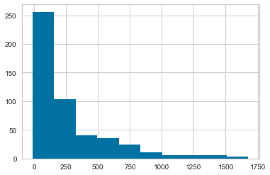
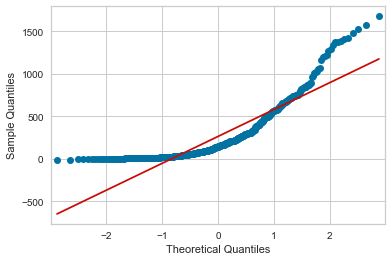
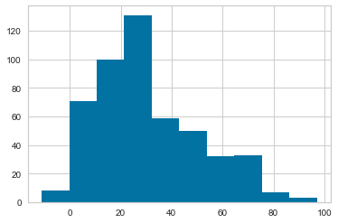
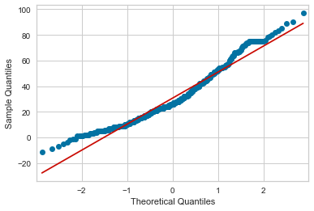
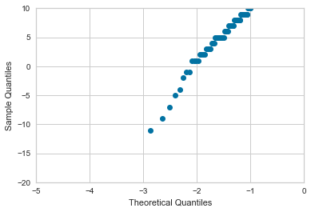

QQ Plots
Overview
Short and sweet, a QQ plot is used to check the normality of a given data distribution.
Their construction is pretty straight-forward. Essentially you:
(Borrowing visuals from StatQuest):
- Sort your data and label each point as its own quantile (10th, 42nd, 99th, etc). Normalized data is your cleanest way to go here.
from IPython.display import Image
Image('../images/qq_data.PNG')
- Then, using the quantiles from step (1), fire up your vanilla
N ~ (0, 1)distribution, and sample the same quantiles from it
Image('../images/qq_theory.PNG')
Note: Because quantiles are a strictly ordinal measure (think median vs mean), comparing quantiles to quantiles across different distributions may very well yield inconsistent values.
Generating QQ Plots
For starters, we’ll download an interesting dataset using yellowbrick and ignore like 80% of it, lol
from yellowbrick.datasets import load_nfl
dataset = load_nfl(return_dataset=True)
df = dataset.to_dataframe()The dataset describes overall Receiving stats for the 2018 season. There’s a lot here.
df.head()| Rk | Player | Id | Tm | Age | G | GS | Tgt | Rec | Ctch_Rate | ... | FirstTeamAllPro | C_pos | CB_pos | DT_pos | FB_pos | QB_pos | RB_pos | T_pos | TE_pos | WR_pos | |
|---|---|---|---|---|---|---|---|---|---|---|---|---|---|---|---|---|---|---|---|---|---|
| 0 | 1 | Michael Thomas | ThomMi05 | NOR | 25 | 16 | 16 | 147 | 125 | 0.850 | ... | 1 | 0 | 0 | 0 | 0 | 0 | 0 | 0 | 0 | 1 |
| 1 | 2 | Zach Ertz | ErtzZa00 | PHI | 28 | 16 | 16 | 156 | 116 | 0.744 | ... | 0 | 0 | 0 | 0 | 0 | 0 | 0 | 0 | 1 | 0 |
| 2 | 3 | DeAndre Hopkins | HopkDe00 | HOU | 26 | 16 | 16 | 163 | 115 | 0.706 | ... | 1 | 0 | 0 | 0 | 0 | 0 | 0 | 0 | 0 | 1 |
| 3 | 4 | Julio Jones | JoneJu02 | ATL | 29 | 16 | 16 | 170 | 113 | 0.665 | ... | 0 | 0 | 0 | 0 | 0 | 0 | 0 | 0 | 0 | 1 |
| 4 | 5 | Adam Thielen | ThieAd00 | MIN | 28 | 16 | 16 | 153 | 113 | 0.739 | ... | 0 | 0 | 0 | 0 | 0 | 0 | 0 | 0 | 0 | 1 |
5 rows × 29 columns
For the sake of demonstration, let’s consider total yardage.
This skewed distribution makes a ton of sense when you consider how many players don’t get a lot of touches during the season.
df['Yds'].hist();
Now we’ll fire up statsmodels.api, which has a really clean utility for generating QQ plots.
Go figure this distribution isn’t very normal.
from statsmodels.api import qqplot
qqplot(df['Yds'], line='s');
The “Longest Reception” metric, on the other hand, looks a bit more palatable– what, because it has an inherent upper-bound at the length of a football field.
df['Lng'].hist();
Not perfect, but certainly normal-er!
qqplot(df['Lng'], line='s');
… but also runs into having a negative-yard-longest-reception?
fig = qqplot(df['Lng'])
fig.axes[0].set_xlim([-5, 0])
fig.axes[0].set_ylim([-20, 10]);
No, that’s accurate
df['Lng'].min()-11
lol
df[df['Lng'] == -11]['Player']492 Russell Wilson
Name: Player, dtype: object